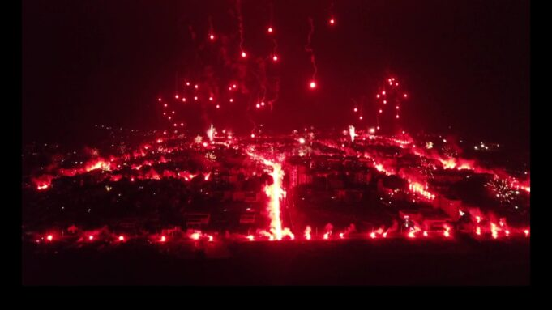
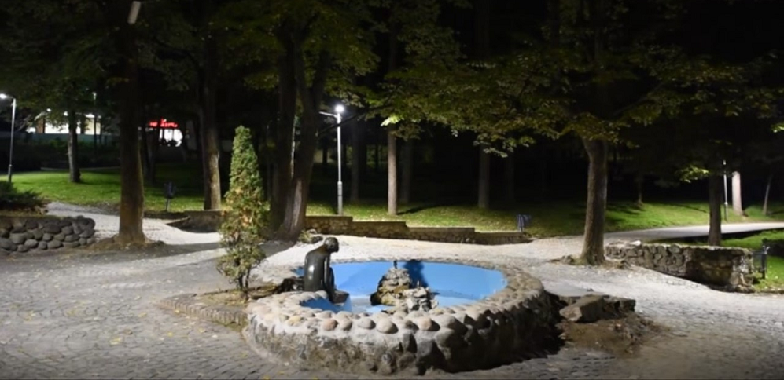
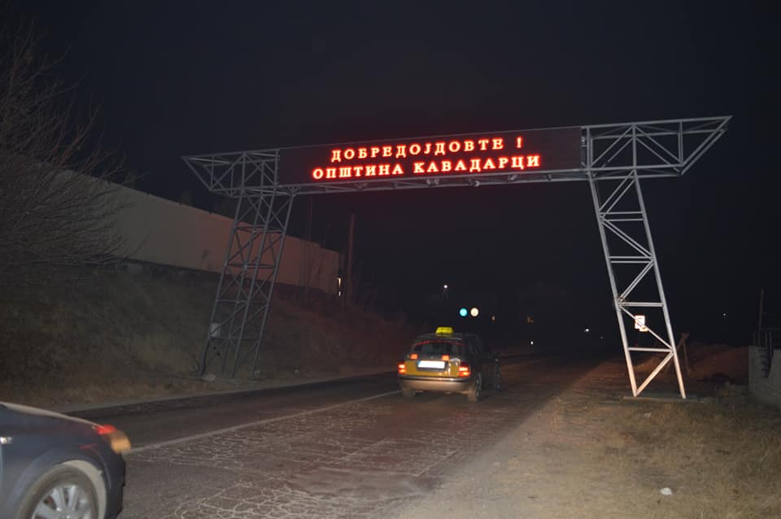
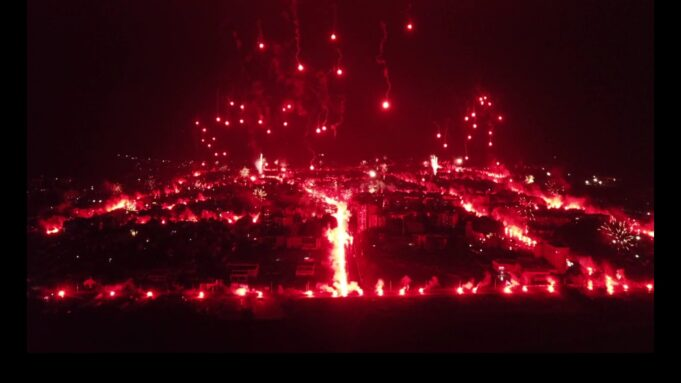
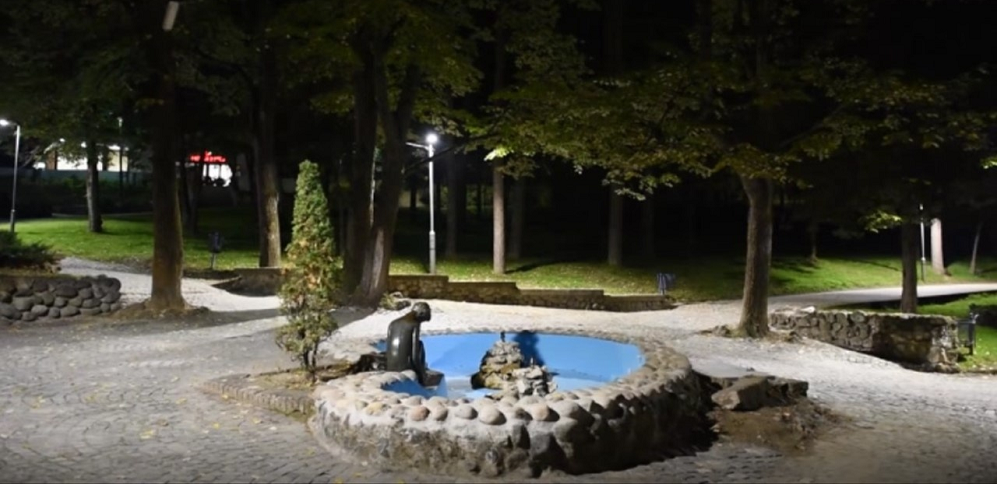
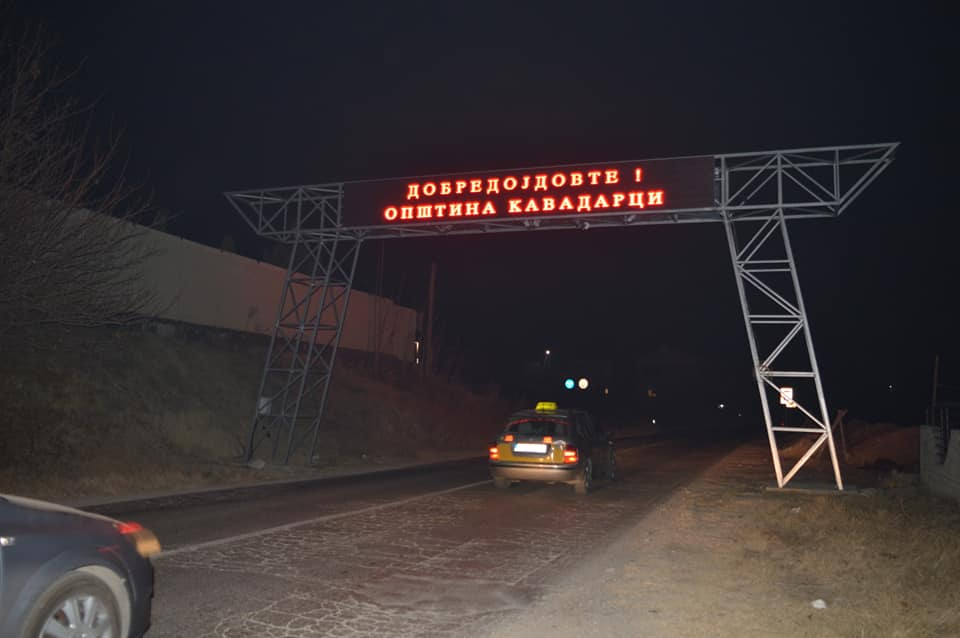

Улично осветлување во Кавадарци
Пред да продолжите!!
Која е нашата надлежност?
Прегорена светилка?
Пријавете на тел:
Вашата улица е темна?
Пријавете на тел:
Патишта
Автопатите и магистралните патишта не се наша одговорност.
Треба да поднесете барања во врска со нив до националната Агенција за државни патишта.
Развој
Ново улично осветлување, подобрено осветлување, ознаки и други форми на модификации на патишта или
други улични елементи може да бидат скапи за поставување.
Мораме да се погрижиме паметно да ги користиме нашите ресурси.
Затоа, обично можеме да направиме нешто само кога има проблеми на таа локација во минатото,
и прво треба да се справиме со најопасните локации.
Прашања
Ве молиме да се консултирате со општинскте служби пред да побарате нови елементи(улично осветлување) на локалните улици или патишта.
Вашето барање

Факторите што ќе влијаат врз одобрување на вашето барањето, вклучуваат:


 




